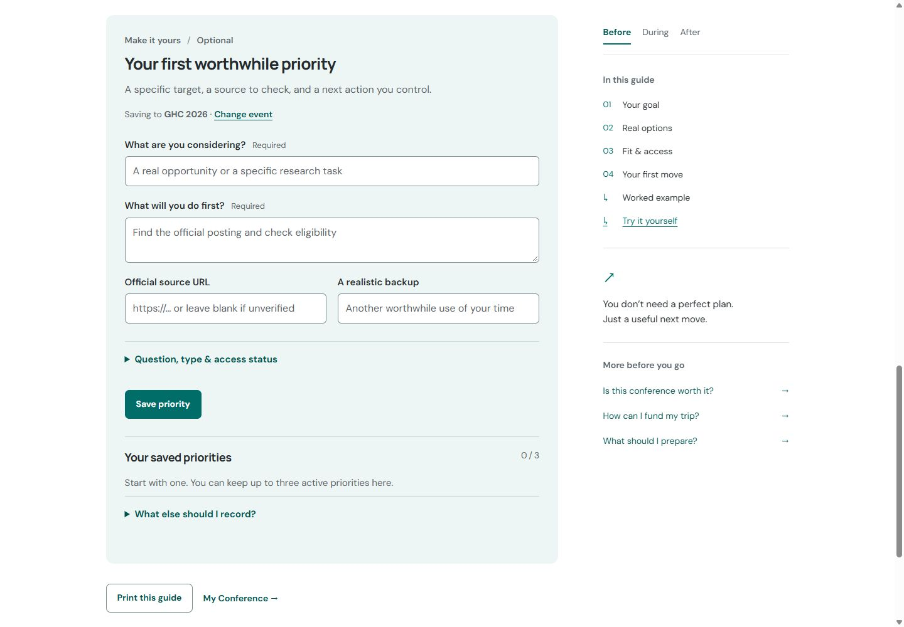
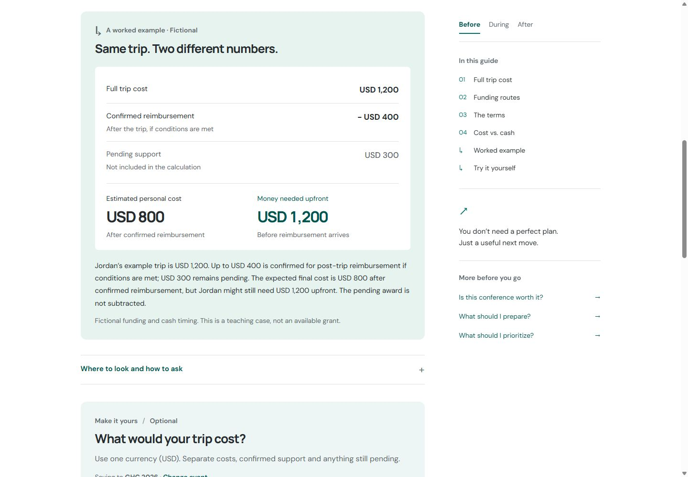
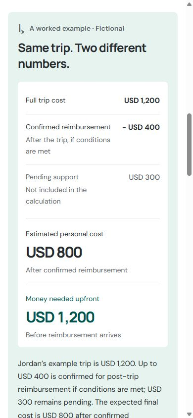
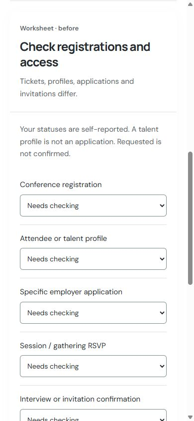

Conference Leverage · Internal design review · October 12, 2026
One visual language.
Three ways to use it.
Compare the original prototype with the Priorities, Funding and My Conference implementation. These are real browser captures. Open an image to inspect it at full size.
Examples and tools in context
The worksheets share their save behavior with My Conference. The funding case is explicitly fictional; pending support stays out of the subtraction.







